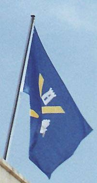

|
|
Sant
Andreu de Palomar segle XXI
|
stap.21
|
|
així...
!!
així va la nostra Bandera |
 |
ja
era hora que us n'adonéssiu
i rectifiquéssiu !! (això de que sigui NOVA sí que és un detall inesperat) |
la bandera de Sant Andreu de Palomar a la seu del 'Districte', durant un grapat de dies
 |
respecte
!!
|
|||
 |
aquest és l'eix de la seva sensibilitat i el seu respecte,
aquesta és una mostra més del despreci que el centralisme de l'Ajuntament de Barcelona
manifesta pel nostre Poble
stap21@sant-andreu.com
| 08/04/2002 Reprodueix la fotografia i cita part del text d'aquesta Web |
Sant Andreu de Palomar segle XXI
en procés de constitució, per a dinamitzar Sant Andreu de Palomar
i denunciar els greuges, les potinades i les agressions que pateix
|
per a dinamitzar Sant Andreu de Palomar i denunciar els greuges, les potinades i les agressions que pateix
|

Tornar